CDT GUI
Starting CDT
If R is not open yet, open it by clicking on its icon. To run CDT, load CDT package by entering library(CDT) at the prompt. If you are using RGui, you can load CDT package by using the menu Packages, then click the sub-menu Load package..., and select CDT from the list. You can start CDT by entering the command startCDT().
# Load CDT library
library(CDT)
## Loading required package: sp
## Registered S3 method overwritten by 'R.oo':
## method from
## throw.default R.methodsS3
##
## -----------------------------------------------------------
## CDT version 5.0 -- Copyright (C) 2014-2019
## Climate Data Tools
## International Research Institute for Climate and Society
## CDT can be found at https://github.com/rijaf/CDT
## If you have issues installing CDT, you can report it to
## https://github.com/rijaf-iri/CDT/issues/1
##
## To start CDT use startCDT()
## -----------------------------------------------------------
## # Starting CDT
startCDT()When CDT starts, you are presented with the GUI as shown in the figure.
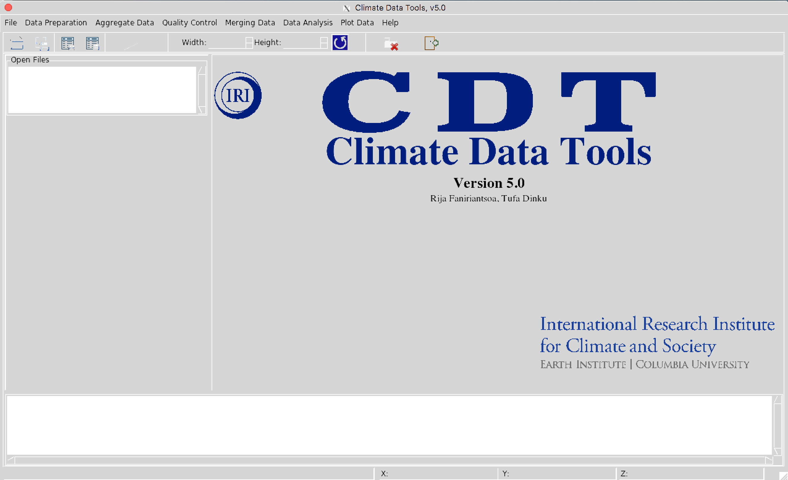
CDT Main Window
After you select a function from the menu to execute, the GUI is transformed as follows (the numbers 1 through 7 in red-cyan circles are presented below)
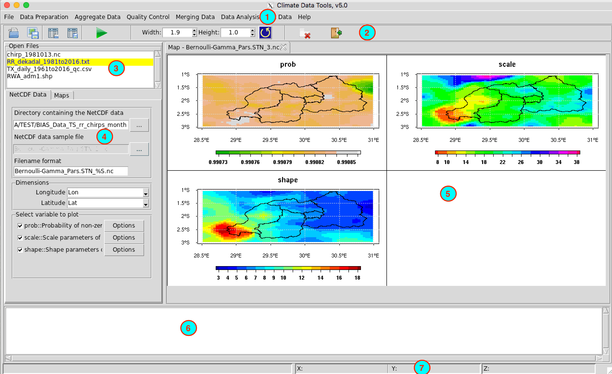
Your window decorations (title bar, etc.) may appear different depending on your operating system and window manager.
CDT GUI is divided into seven components:
- Menu Bar
- Toolbars
- Loaded Files
- Input and Command Panels
- Map and Table View
- Output Message
- Status Bar
These seven components of CDT interface are described in more detail in the following sections.
Menu Bar
The menu bar provides access to various CDT functions using a standard hierarchical menu.
File
CDT can open three file types:
- Text/ASCII or CSV files
- NetCDF files
- ESRI Shapefiles
Data Frames
To open an text or CSV files, go to the menu an Open File dialog will come up prompting you to select the file to be open.
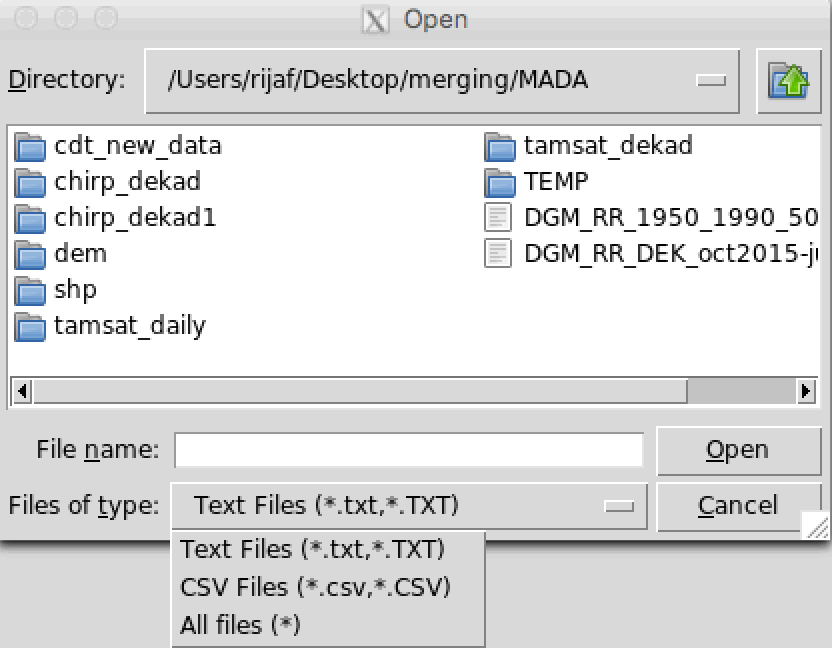
You can navigate through this dialog box to locate the path of the file to open, you can select a file by double-clicking on it or by selecting it and pressing the Open button.
You can filter the file you want to open based on the file extension. If your file doesn’t have the default file extensions (.txt or .csv), you can use the “All files” filter to list your file. Here the file extension doesn’t matter as long as your file is an ASCII file.
After you selected the file to open, another Open File dialog manager will appear with various options which allows you to precise the format of the data.frame.
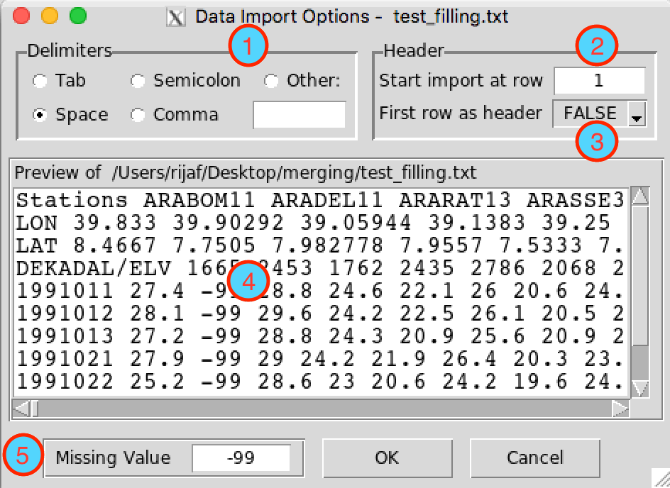
So, you can:
- specify the delimiter of the column
- import the data from the desired line
- specify if the data has a header or not
- have an overview of the data content
- provide the missing values flag if different from the general setting.
NetCDF file
You can load a NetCDF file into CDT using the menu options , an Open File dialog will come up prompting you to select the file, then another dialog box will appear for allowing the selection of the variable and coordinates.
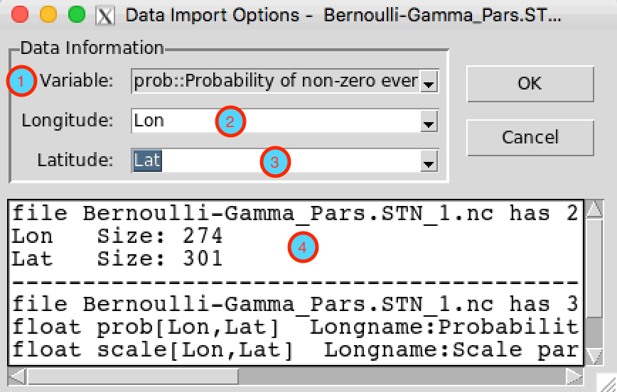
Through this dialog box, you can:
- select the variable to be loaded into CDT
- select the longitude
- select the latitude
- have an overview on the netcdf file.
ESRI Shapefile
The menu allows to load shapefiles into CDT.
Save table
The menu allows to save a table (i.e., a data.frame) opened on the right panel.
If you want to save an opening table under a new name or new file extension, use the menu , this will pop up a dialog box asking you to select or enter the filename to save the table.
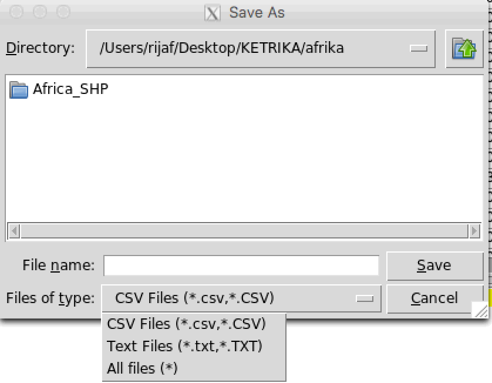
You can save a table as a text file or a CSV file.
If you enter a file that already exists, the dialog box will prompt you for confirmation whether the existing file should be overwritten or not.
Save image
You can save an image displayed on the right panel by using the menu . It will open a dialog box in which you can enter the file to save the image and define the resolution of the image.
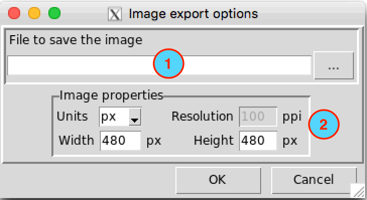
Enter the name of the file to save the image (the image will be saved in your working directory) or the full path to the file. You can save the image in JPEG or PNG format. When typing a filename, do not forget to add the extension on the filename (Example: my_image.jpg or my_image.png).
You can browse the location where you want to save the image by clicking on
 , this will pop up a dialog box asking you to select or enter the filename to save the image.
, this will pop up a dialog box asking you to select or enter the filename to save the image.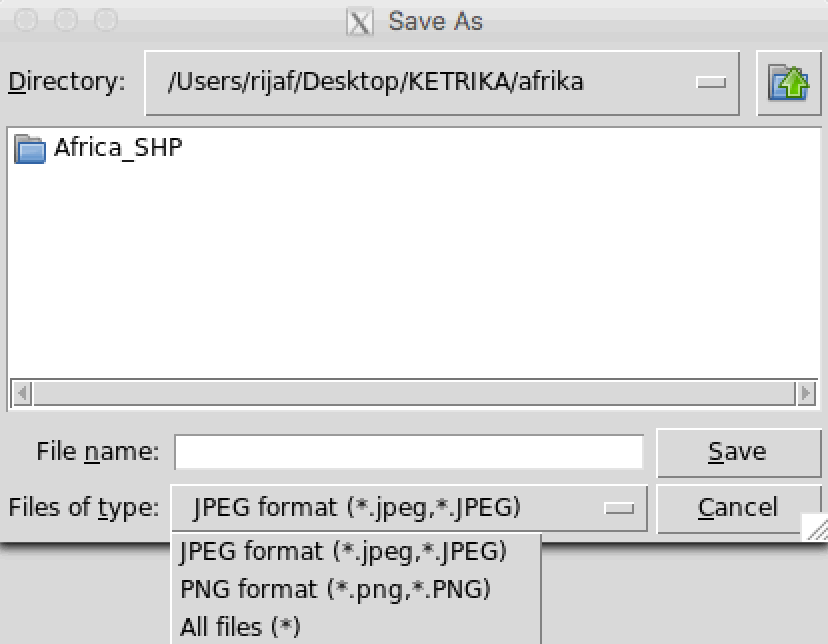
- Set the image resolution by selecting the unit to use and providing the width and height of the image. The units can be
px(pixels),in(inches),cm(centimeters) ormm(millimeters).widthandheightare given by the selected unit. The resolution is used for units other than pixels and expressed inppi(pixels per inch), which is required to convert points to pixels.
CDT Configurations
The menu allows to select the language, set the missing values code, change the working directory, and configure the Tck/Tk libraries.
The tab CDT Configuration allows to set general CDT configuration options
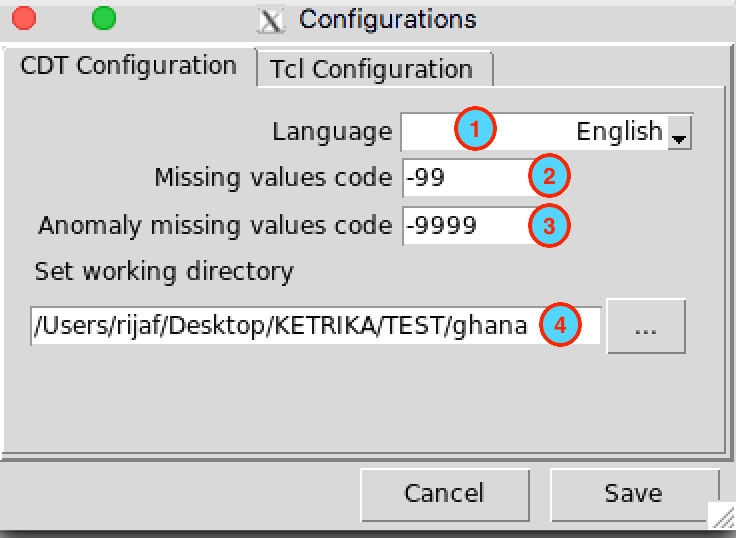
- allows to select the language to use during the session
- allows to set the missing values code for the whole session of CDT
- allows to set the missing values code for anomalies data for the whole session of CDT
- allows to browse a directory tree to set the working directory
Changing “CDT Configuration - Language” needs to restart CDT to take effect
The tab Tcl Configuration allows to specify the Tcl/Tk libraries installation
Mac and Linux

- Check this box if the package Tktable is present in the list of directories used by the tcl command
packageto find packages. Locate where the Tktable directory is installed and check if it is located under the list of directories used by the tcl variable$auto_path. Run this command in your Terminalecho 'puts $auto_path' | tclsh, it will display a list of directories where Tcl search for packages. - If (1) is unchecked, enter here the full path to the directory where Tktable is located or browse with the button in the right.
- Check this box if the package BWidget is present in the list of directories used by the tcl command
packageto find packages. - If (3) is unchecked, enter here the full path to the directory where BWidget is located or browse with the button in the right.
Windows
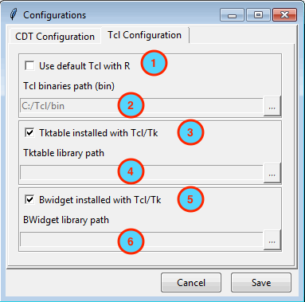
- Check this box if you want to use a Tcl/Tk library (for example: ActiveTcl) other than the one installed by default with R.
- Provide here the full path to the Tcl binaries directory.
- Check this box if the package Tktable is located under the Tcl libraries directory.
- If (3) is unchecked, enter here the full path to the directory where Tktable is located or browse with the button in the right.
- Check this box if the package BWidget is located under the Tcl libraries directory.
- If (5) is unchecked, enter here the full path to the directory where BWidget is located or browse with the button in the right.
Changing “Tcl Configuration” needs a new R session to take effect.
Exit CDT
The menu allows to quit CDT.
Toolbars
The toolbar provides access to few functions in the File menu, plus additional tools for interacting with the displayed image. Each toolbar item has pop-up help available. Hold your mouse over the item and a short description of the tool’s purpose will be displayed.
 allows to load data.frame into CDT, it’s the same as the menu .
allows to load data.frame into CDT, it’s the same as the menu .- allows to save current displayed image in the right panel as JPEG or PNG, same as the menu .
- allows to open a
data.frameand directly display it on a table without loading into CDT.  allows to save a table displayed in the right panel, same as .
allows to save a table displayed in the right panel, same as . allows to execute task from different functions listed in the menus.
allows to execute task from different functions listed in the menus.- 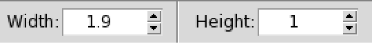 a spinbox allows to specify the actual dimensions (height and width) of the visible image.
- redraws displayed image after changing the height or width from the spinbox. After any change on the dimensions of the image through the spinbox, this button will be activated and becomes
 , you have to redraw the plot to get the new dimensions.
, you have to redraw the plot to get the new dimensions. - Close open tabs.
 Quit CDT.
Quit CDT.
Open Files
Each file loaded into CDT is listed in this listbox, it will avoid loading the file twice.
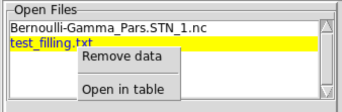
You can delete the data by selecting the corresponding filename and then right click on it, on the drop down menu click on . You can display the data.frame on a table by selecting as well.
Input and Command Panels
CDT has two ways to set parameters when you use the menu: a dialog box and the left command panel.
Each time you start a CDT function through the menu, an dialog box will come up prompting you to enter the inputs and outputs files and directories related to this function, as well as the required parameters so that the function runs correctly. After you filled up all required fields, you have to click on the button on the toolbar to execute.
If the function needs to display table or plot, CDT provides a command panel displayed in the left panel to set all required parameters and to work with the results, such as, display table or plot/map.
Map and Table View
Tables, print of R objects, plot and maps are displayed in this area.
The tables can be a simple display of a data.frame or a table you can edit for further purposes, if it is an output from a function such as quality control and homogeneity tests.
The plot and map displayed in this window will depend on the type of outputs or functions you have chosen to run.
The map view can be panned, shifting the focus of the map display to another region, and it can be zoomed in and out.
Output Message
When loading data or running some functions, you can track and follow messages that appear in this area. You can check if there were an error during the operation or it has been successfully completed.
Status Bar
On the left side of the status bar, you can get a long description of the widget (button, input entry, list box, combo box, …) you are hovering over (not available for all widgets). In addition, when you hold your mouse over the widget, a short description of the widget’s purpose will be displayed.
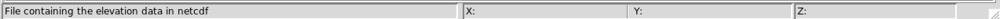
When a map and graph are displayed, the right side of the status bar shows the current position of the mouse as a long/lat coordinate, following it while moving across the map view. Next to the coordinate display you will find the name of the polygon (region, district, …) displayed if the map is from an ESRI shapefile.